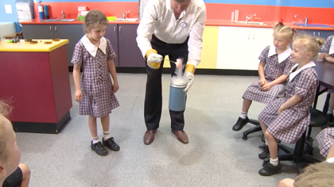

Some of the ReMSTEP activities resulted in the development of resources which we have made available here for use by the wider eductaion community.

Inquiry Science illustrations of practice
In support of the Inquiry science topic, in La Trobe’s Master of Teaching (Primary), ReMSTEP at La Trobe developed a video series of illustrations of practice in Inquiry Science.
Watch these videos
Contemporary VCE Biology
Units of Work and Resources, which are aligned with the Victorian Curriculum and Assessment Authority VCE Biology Curriculum — and were produced by a group of Master of Teaching students at Deakin University in collaboration with scientists and education academics.
Explore these resources